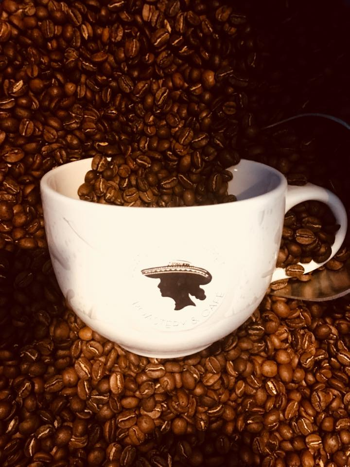
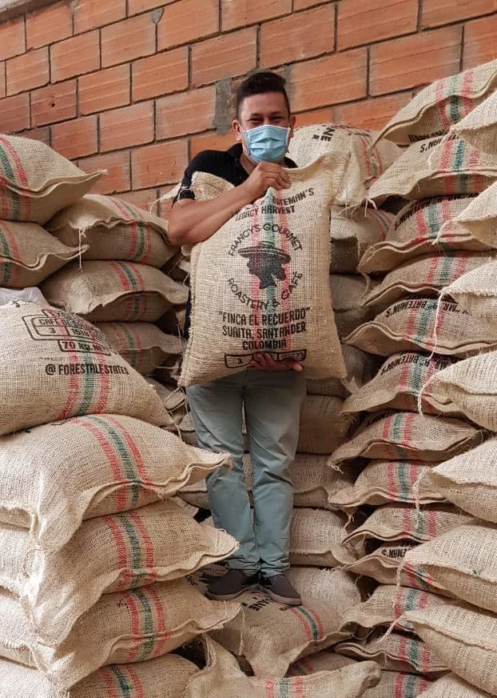
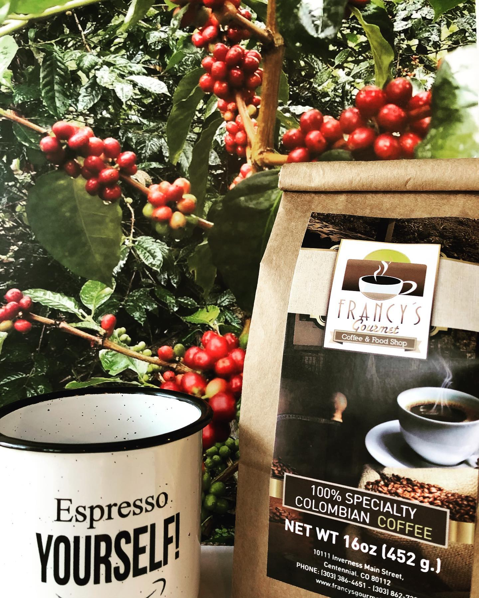
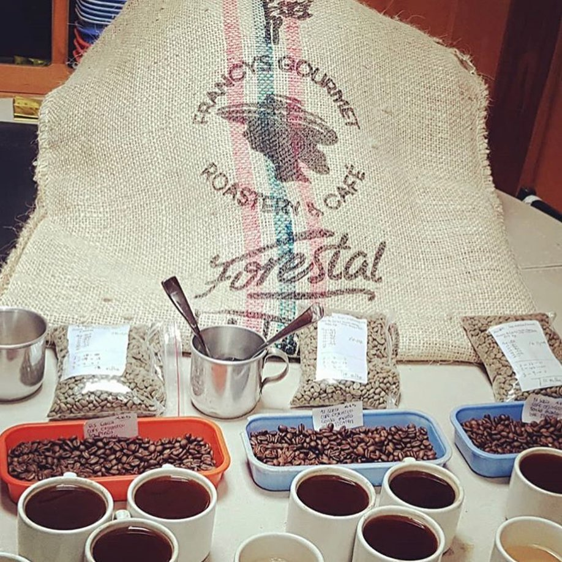
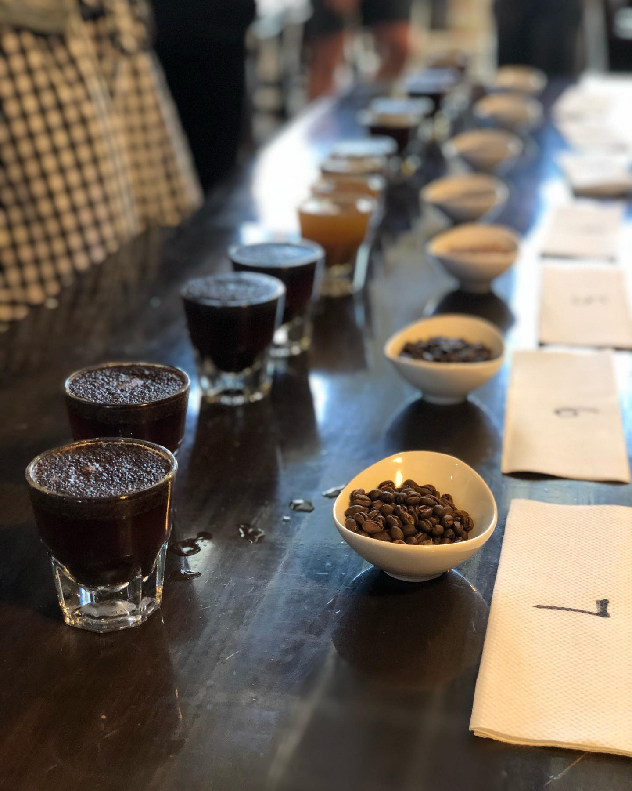

VENTAS POR MAYOR
    
Nuestras prácticas de abastecimiento distinguen a Francy's Gourmet de otras compañías de café.
Creemos en compensar a los cafeteros trabajadores, principalmente a los caficultores de granos de café.
Nuestras prácticas de abastecimiento distinguen a Francy's Gourmet de otras compañías de café.
Creemos en compensar a los cafeteros trabajadores, principalmente a los caficultores de granos de café.